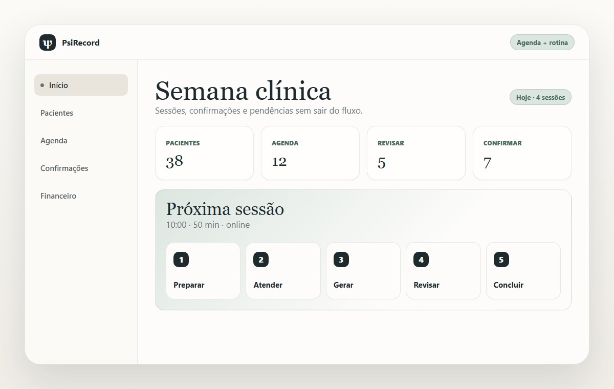
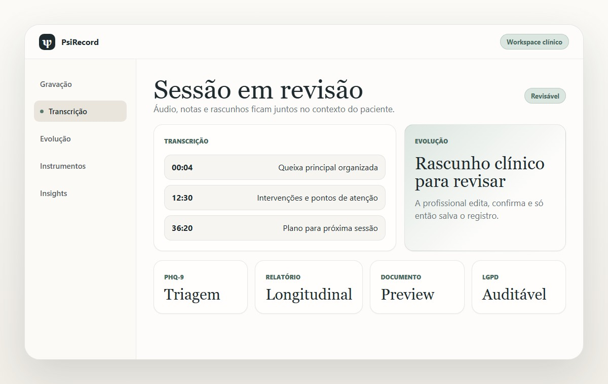
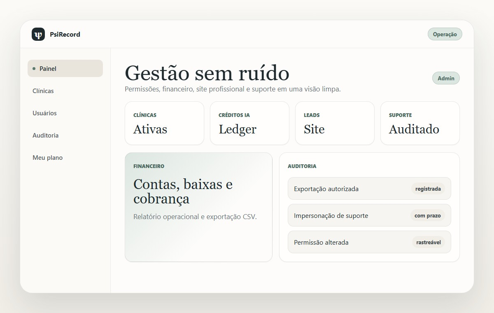

Para psicólogas, clínicas e equipes que querem operar com rastreabilidade
PsiRecord
Agenda, prontuário, sessão, IA revisável, documentos e gestão clínica em um só fluxo.
Pacientes, áudio, transcrição, evolução, instrumentos, financeiro, site profissional e administração auditável.
Agenda
Pacientes
Sessões
Prontuários
Modelos
Financeiro
Site profissional
Admin
Bem-vinda · quarta, 08 jul
Próxima sessão, pendências e módulos em uma visão
front atual
Gravação online ou presencial, upload, anotações, instrumentos, transcrição, evolução e insights no mesmo contexto da sessão.
Produto em uso
A rotina da clínica aparece em telas claras, não em módulos soltos
O PsiRecord reúne agenda, atendimento, evolução, documentos e administração com a mesma linguagem visual do front atual.

Agenda clínica
Semana, confirmações e próximos atendimentos em uma visão
O painel mostra a rotina do dia sem esconder pendências importantes.

Workspace clínico
Áudio, transcrição e evolução revisável
A IA apoia o texto. A profissional decide o registro final.

Gestão
Financeiro, site, plano e administração
A operação fica perto da clínica, sem misturar papéis sensíveis.
Mapa de módulos
Tudo que sustenta o atendimento, agrupado por rotina
Menos telas espalhadas. Mais continuidade entre clínica, documentos e operação.
Paciente e prontuário
Ficha
Anamnese
Histórico
Contextos
Consentimentos
Sessão e evolução
Agenda
Captura
Transcrição
Evolução
Instrumentos
Modelos e exportação
CFP
Placeholders
Preview
Relatórios
Identidade
Gestão e crescimento
Financeiro
Meu site
Plano IA
Secretaria
Admin
Fluxo clínico
Da agenda ao registro final, sem trocar de contexto
A sequência acompanha a rotina real e mantém a revisão humana no centro.
Quero conhecer
Resultado
Menos dispersão. Mais continuidade entre atendimento, documento e gestão.
O ganho aparece quando a sessão, o documento e a operação deixam de viver em lugares diferentes.
Registro
Áudio, transcrição, evolução e prontuário no mesmo contexto.
Rotina
Agenda, confirmações e revisões sem planilha paralela.
Documentos
Modelos, identidade, preview e exportação revisável.
Gestão
Financeiro, plano, site, usuários e auditoria.
Segurança clínica e LGPD
Apoio inteligente, responsabilidade preservada
O produto foi desenhado para apoiar, registrar e auditar sem transformar IA em decisão clínica.
Rascunhos só viram registro depois de revisão profissional.
Pontuações e faixas não substituem avaliação clínica.
Site profissional e leads ficam separados do prontuário.
Exportações, suporte e papéis exigem permissão e auditoria.
Produto em evolução contínua
Conversar sobre o PsiRecord
Veja como o PsiRecord pode organizar a rotina clínica, documental e operacional da sua prática.
Dúvidas
Perguntas frequentes
O PsiRecord substitui minha decisão clínica?
Não. Ele organiza, transcreve e sugere apoio textual, mas a decisão final é sua.
Quais módulos existem hoje?
Agenda, pacientes, prontuário, sessões, IA revisável, instrumentos, modelos, financeiro, site, plano, usuários e admin.
Ele atende presencial e online?
Sim. Funciona com captura online, microfone presencial autorizado ou upload manual.
Os instrumentos clínicos fazem diagnóstico automático?
Não. Eles ajudam na triagem e no monitoramento, sempre com revisão humana.
Secretaria consegue ver prontuário?
Não por padrão. O papel existe para agenda e confirmações com menor privilégio.
O painel administrativo acessa tudo livremente?
Não. Ações sensíveis exigem papel adequado, justificativa e auditoria.